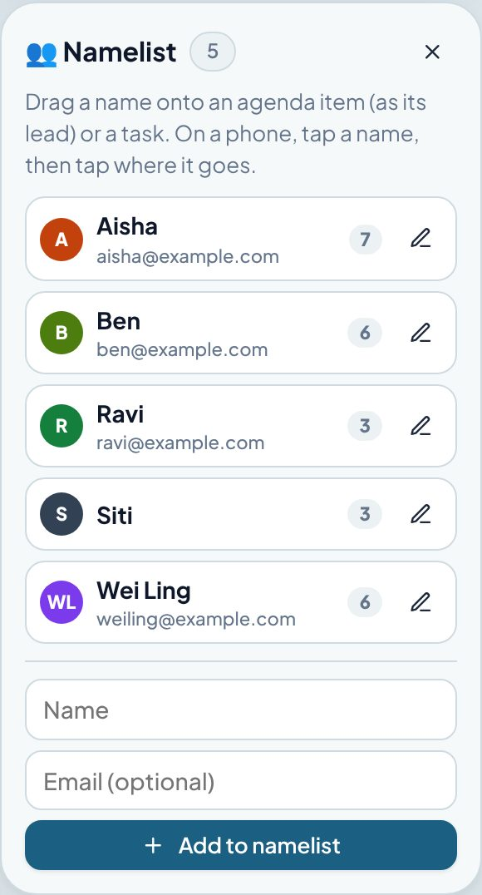
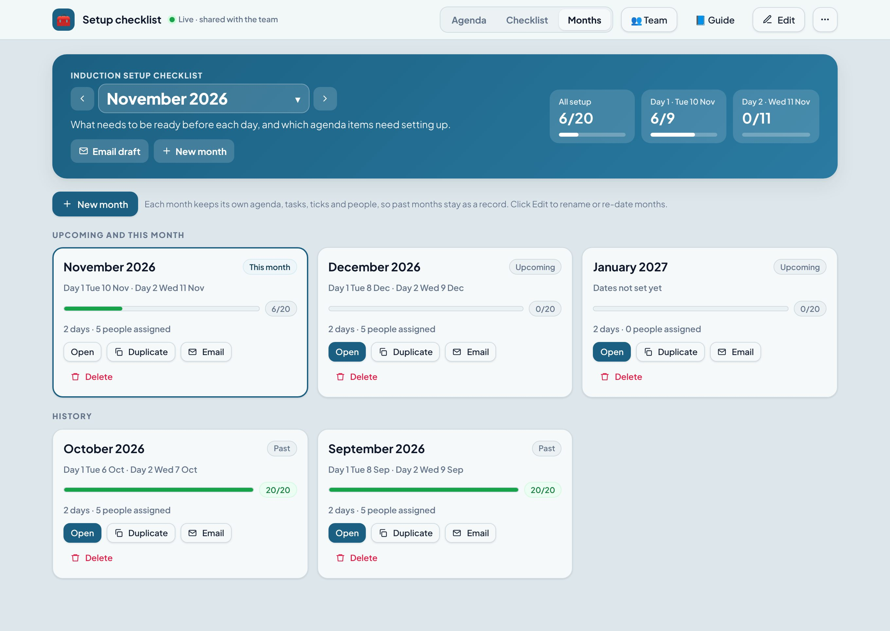
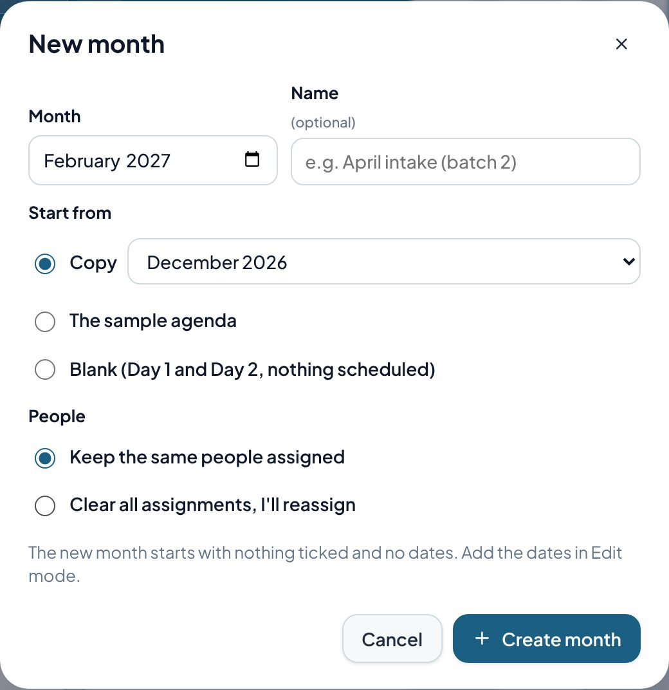
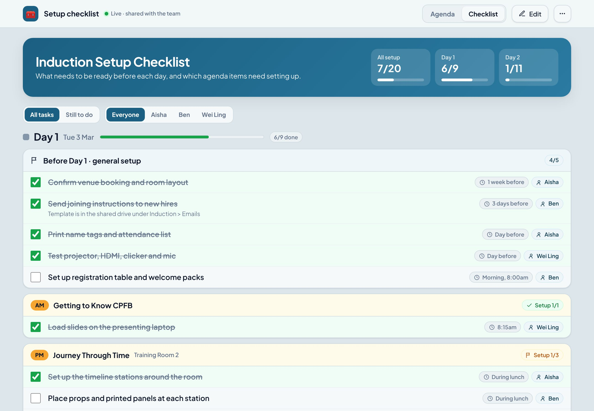
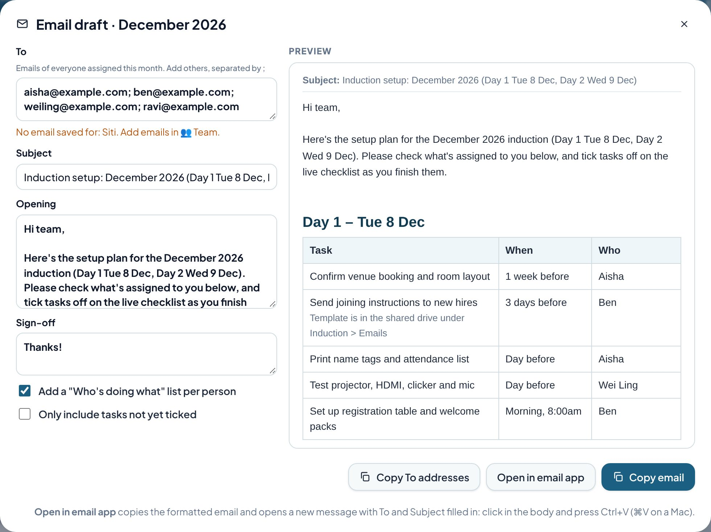
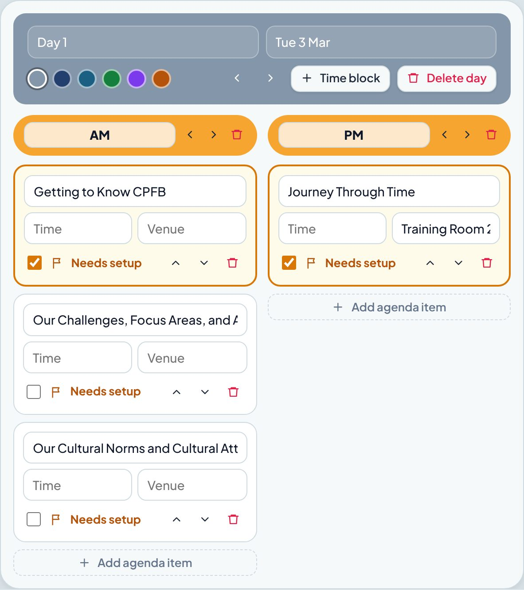
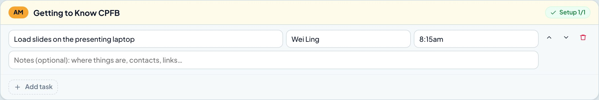
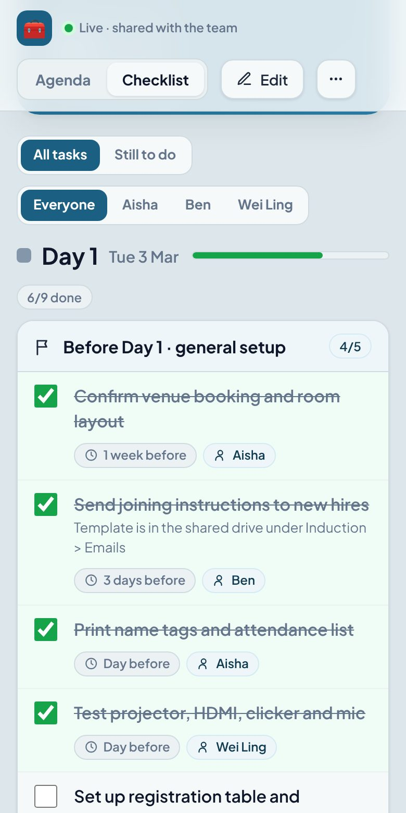

Using the Induction Setup Checklist
One shared page for the induction team: what to set up before each day, which agenda items need setting up, and who is doing what, month by month. Everyone sees ticks and changes live.
iOverview
Each month has its own agenda, setup tasks, ticks and people. Anyone with the link can tick tasks and edit.
The month's programme laid out like the agenda slide. Items that need setup are highlighted.
The setup tasks for each day: "Before Day N", then one list per highlighted agenda item. Tick them off as you go.
Every month you've set up: upcoming ones planned ahead, and past ones kept as a history.
The namelist. Drag names onto agenda items and tasks to assign people.
Turns the month's setup into an email to copy into Outlook or open as an Outlook draft.
Change the agenda and tasks: days, dates, time blocks, items, what, when and notes.
⚡Quick start
- Set up the namelist once. Click 👥 Team and add everyone in the induction team, with their email if you want them on the email draft.
- Pick or create the month. Use the month picker at the top. For a new intake, click New month and copy last month (see Months).
- Check the agenda. Click Edit, type in the dates for each day, and tick Needs setup on every agenda item that needs something prepared.
- Add the tasks. On the Checklist tab, add what needs doing and when, for each list.
- Assign people. With 👥 Team open, drag names onto agenda items (the lead) and onto tasks.
- Send it out. Click Email draft, check the preview, and copy it into Outlook. The team ticks tasks off on the live checklist as they go.
👥Namelist and assigning people
Click 👥 Team at the top to open the namelist beside the agenda or checklist. There's one namelist for all months.

Maintaining the namelist
- Add: type a name (and an email, optional) at the bottom of the panel and press Enter or Add to namelist.
- Edit: click ✎ next to a name to change the name or email. The change shows everywhere they're assigned, in every month.
- Remove: click ✎, then Remove. They stay on anything they were already assigned, so past months still show who did what. Restore them from Removed at the bottom of the panel.
Assigning
- Drag and drop: drag a name onto an agenda item to make them its lead, or onto a task to assign the task. This works on both the Agenda and Checklist tabs, in normal and Edit mode.
- Tap to assign (phones and tablets): tap a name, then tap each agenda item or task it should go on. Tap Done (or press Esc) when finished.
- A task or item can have more than one person. Drop more names on it.
- Tasks in an agenda item go to its lead by default (dashed name), until you drop someone else on the task.
- Unassign: click the × on a name chip. The × only shows while the Team panel or Edit mode is open, so it can't be clicked by accident.

When someone filters the checklist to their name, they see the tasks assigned to them plus every task of the items they lead.
🗓Months and history
Each month is a separate copy of the agenda and checklist, with its own dates, ticks and people. Switch months with the picker (or ‹ ›) at the top of the page.

Creating a month (including in advance)
Click New month (at the top of the page, or on the Months tab), or Duplicate on a month's card to copy that month.

- Month: any month, including months ahead. It suggests the month after your latest one.
- Name (optional): for example "April intake (batch 2)", if you have two intakes in a month.
- Start from:
- Copy a month: same days, time blocks, agenda items, tasks and notes.
- The sample agenda: the original example programme.
- Blank: Day 1 and Day 2 with nothing scheduled.
- People (when copying): Keep the same people assigned, or Clear all assignments to reassign from scratch.
A new month always starts with nothing ticked and no dates. Add the dates in Edit mode.
History
Past months move to History on the Months tab and keep their ticks and names, so you can look back at who did what. To rename a month, change its month, or delete it, click Edit and use the boxes on its card.
1Agenda tab
The month's days side by side, each split into time blocks (AM and PM), with the agenda items underneath.
- Colours: orange = needs setup, still to do. Green = all its setup tasks are ticked. White = no setup needed.
- Progress at the top: tasks done out of the total, for the whole month and for each day.
- Highlighted items list their setup tasks, with when each is due and who's doing it. You can tick tasks right there on the card.
- Click a highlighted item (anywhere except a task) to jump to its checklist. Before Day N in each day's header jumps to that day's general list.
2Checklist tab
For each day: the general "Before Day N" list, then one list for each agenda item marked Needs setup, in agenda order. Each list's header shows its lead.

Ticking tasks
Click the box or the task's name. The tick saves straight away and shows on everyone's screen within a second or two. Click again to untick.
Seeing just your tasks
Still to do hides ticked tasks. Click a name to see only that person's tasks, including all the tasks of the items they lead.

✉Email draft
Click Email draft at the top (or Email on a month's card) to turn that month's setup into an email.

- To is filled in with the emails of everyone assigned that month. It warns you if someone has no email saved. Add others separated by
;. - The email lists each day's setup in tables (task, when, who), with each item's lead. Unassigned tasks show as To be assigned.
- Who's doing what adds a short list per person. Untick it for a shorter email.
- Only include tasks not yet ticked is handy for a reminder email closer to the day.
- The email ends with a link that opens the checklist straight to that month.
| Button | What it does |
|---|---|
| Copy email | Copies the formatted email. Open a new message in Outlook and paste. Recommended. |
| Copy To addresses | Copies the email addresses, to paste into Outlook's To box. |
| ⬇ Outlook draft (.eml) | Downloads a file. Open it and Outlook (desktop) shows a new message with the To, subject and formatted body filled in, ready to send. |
| Open in email app | Opens your default email app with a plain-text version. Long emails can get cut short this way, so prefer Copy email. |
3Editing the agenda
Click Edit, then go to the Agenda tab. Edits apply to the month you're looking at. Changes save when you click or tab out of a box, or press Enter.

| To… | Do this |
|---|---|
| Rename a day or add its date | Type in the two boxes in the day's header. |
| Change a day's colour | Click one of the coloured dots. |
| Reorder days | Use ‹ › in the day's header. |
| Add or remove a day | Add a day below the days; Delete day in the header. |
| Add a time block (e.g. "Lunch" or "9:00am") | + Time block in the day's header, then type its label in the orange bar. Reorder with ‹ ›, delete with 🗑. |
| Add an agenda item | + Add agenda item under a time block. Time and venue are optional. |
| Move an item up or down | The ⌃ ⌄ arrows on the item. |
| Flag an item as needing setup | Tick Needs setup. It gets an orange outline and its own list on the Checklist tab. |
4Editing tasks
In Edit mode, go to the Checklist tab. Each task becomes a row of boxes.

A short instruction, e.g. "Print clue cards and station sheets".
Free text: "1 week before", "Day before", "8:30am", "During lunch".
Optional: where things are kept, contacts, links, the number of copies…
Drag names from 👥 Team. Click × on a name to unassign.
Use + Add task at the bottom of a list to add a task, ⌃ ⌄ to reorder, and 🗑 to delete. Press Tab to move between boxes.
5The ⋯ menu

| Option | What it does |
|---|---|
| Email draft for this month | Same as the Email draft button. See Email draft. |
| New month | Same as the New month button. See Months. |
| Untick everything this month | Clears every tick in the month you're looking at. Usually you'll create a new month instead, so the old one stays as a record. |
| Print this month's checklist | Prints the month's lists (or saves them as PDF), without buttons. |
| Export everything (backup) | Downloads every month and the namelist as a .json file. Do this now and then, and before big changes. |
| Import from a backup | Replaces everything, for everyone, with a backup file. |
6On your phone
The page works on phones, so the team can tick tasks while walking the room.

To assign people on a phone, open 👥 Team, tap a name, then tap where it goes. Tip: bookmark the page, then filter to your own name.
7A typical month
- Ahead Create the next months in advance with New month → Copy, keeping or clearing the names.
- 2 weeks out Add the dates, update the agenda, assign people, then send the Email draft.
- 1 week out Everyone filters to their name and starts on the "1 week before" tasks.
- Day before Check the Agenda tab: anything still orange needs attention. Send a reminder with Only include tasks not yet ticked.
- On the day Tick tasks off on your phone as stations and rooms are ready.
- After Note any changes for next time in the next month's copy. This month stays in History as it was.
?Troubleshooting
| What you see | What to do |
|---|---|
| The dot at the top is orange and says Demo mode | The page couldn't reach the shared database, so changes are only saved in your browser. Check your internet connection and reload. If it says rules not published, the Firestore rules need publishing again (see FIREBASE_SETUP.md). |
| Dragging a name doesn't work | Drag and drop needs a mouse or trackpad. On a phone or tablet, tap the name, then tap where it goes. |
| Someone's missing from the email's To box | They need an email saved: open 👥 Team, click ✎ next to their name and add it. The email draft warns you who's missing. |
| I'm looking at the wrong month | Use the month picker at the top. The page remembers the last month you looked at, and links from the email open their own month. |
| Someone else's change isn't showing | Changes appear within a couple of seconds. If you're typing in a box, the page waits until you leave it before updating. Reload if it still doesn't show. |
| Something was deleted by mistake | There's no undo. Import your last backup from the ⋯ menu, or re-add it by hand. |